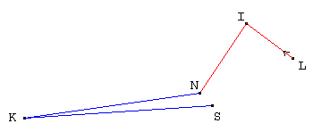
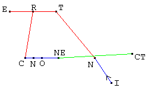
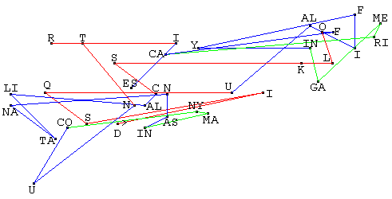
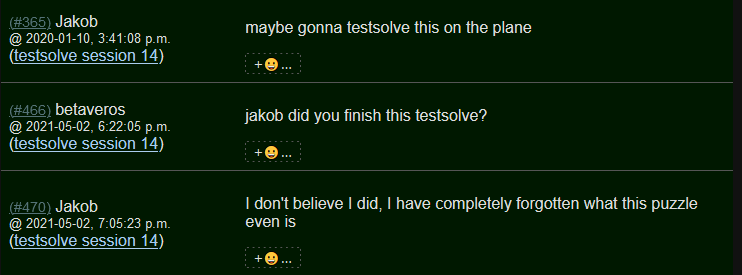
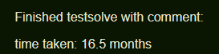

Solution: Links Interconnect
Answer: PINEAPPLE
Written by Ben Yang and Anderson Wang
We are presented with two groups of colored lines labeled with the words LINKS and INTERCONNECT as well as a much larger group of lines at the bottom labeled with a question mark. This suggests that we want to figure out what letters the large group of lines represents, assuming that the top two represent the words LINKS and INTERCONNECT somehow.
There are several observations we can make here that hint at the next step:
- Each group of lines contains a little arrow leading out from a point, suggesting that they should be viewed as paths that start from that point.
- The LINKS group contains 5 points/4 edges and the INTERCONNECT group contains 10 points/9 edges. This slightly suggests that each point or edge corresponds to approximately 1 letter.
- We could go even further and guess that in the LINKS group, the 5 points in order correspond to the letters L, I, N, K, and S. This turns out to be correct.
- The points connected by blue lines always appear to lie on a regular square grid (indeed, if you look at the specific pixel positions, the differences in the x and y coordinates of points connected by a blue line are always a multiple of 14).
- The points connected by red lines also appear to lie on some sort of grid (e.g. the three points at the top of the INTERCONNECT group all lie on the same horizontal line and are equally spaced), but each row of the grid is offset from the one above it.
- The green lines don’t seem to have any regularity compared to the red or blue lines.
- The above 3 observations suggest that each of the 3 colors works differently somehow.
It turns out that the red, blue, and green lines represent movement on a standard QWERTY keyboard, the periodic table, and the map of the United States respectively. In particular:
- If a red line connects two points, then both of them represent letters and the line connects their relative positions on a keyboard.
- If a blue line connects two points, then both of them represent element symbols (either 1 or 2 letters) and the line connects their relative positions on the periodic table.
- If a green line connects two points, then both of them represent state abbreviations (2 letters) and the line connects the relative positions of their capitals on the US map.
(In practice, we expect teams to either think of the keyboard or periodic table first, confirm it with the LINKS example, and then use the INTERCONNECT example to figure out the US map after deducing the green line connects NE and CT.)
Here are the LINKS and INTERCONNECT images with the points labeled with their corresponding letter(s):

As a side note, in INTERCONNECT, the blue line moves right from the C to the O, then back left to the N, and then right to the NE. Because later dots and lines are drawn on top of earlier ones, we can actually see this in the image itself if we look carefully: the blue line runs over the entirety of the O dot, but only appears on the right half of the N dot. This observation is certainly not needed to solve the puzzle, though.
Armed with this information, we can now decode the bottom group of lines. There are many possible break-ins, but e.g. we can look at the first 5 points, which are all connected with red lines, and try all possible letter sequences that stay on the keyboard. These turn out to be CKXAJ, VLCSK, DISQU, FODWI, and GPFEO; of these options, DISQU is clearly the most promising.
Here is the diagram with every point labeled:

The final message is DISQUALIFYING AMERICA, FOLKS CALL IT ANANAS IN MANY COUNTRIES. This is a clue for PINEAPPLE, which is translated as “ananas” in essentially every language except for English.
Author’s Notes
This puzzle was born out of the question "what would a puzzle that fits into the microscope round look like?" and its reply of "dunno, a bunch of line segments maybe".
Another inspiration was the video game mechanic where certain obstacles in a world are bypassed by traveling to an alternate version of that world (light/dark, different seasons, etc.) where the obstacle does not exist. Similarly, we can imagine the lines in the puzzle to be paths across three different planes, with portals connecting shared letters or bigrams. Finding a cluephrase that used a nontrivial number of green lines was very difficult, because you can only switch between blue and green lines at state abbreviations that are also chemical elements!
Another interesting fact is that the curvature of the Earth needed to be taken into account when drawing the green segments. Our construction spreadsheet had a tab named "distance worksheet" with two variations of longitudinal distance- one calculated by the Pythagorean theorem, and one calculated at the latitudinal midpoint. The puzzle ended up drawing the green line segments using the (x,y) pair of longitudinal distance at the latitudinal midpoint and latitudinal distance.
This puzzle was also the subject of the longest testsolving session ever recorded in puzzlehunt history: 
Appendix
Here is some more information about how the colored lines and grids specifically worked:
- Within each row of the QWERTY keyboard, consecutive letters are 39 pixels apart. Each row is shifted 13 pixels to the right from the row above it.
- The periodic table has each element as a 14 by 14 pixel square, with the lanthanides and actinides flush against the bottom starting at group 3. This is the standard periodic table used by Wikipedia, but some other images put lanthanum and actinium in between groups 2 and 3 in the upper part of the table - this can be distinguished by the LINKS example, since in the latter case K and N/S should be further apart than they actually are.
- The states were done with a scale of about 10 miles per pixel and using the capitals as the chosen point in each state. More details dealing with curvature for this can be found in the authors' notes.